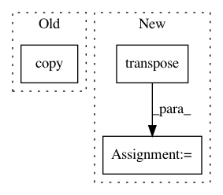

832054b98a7158a8aba01be314355ba0a0696814,art/attacks/poisoning/perturbations/image_perturbations.py,,insert_image,#Any#Any#Any#Any#Any#Any#Any#Any#Any#,88
Before Change
backdoored_img = Image.new("RGBA", (width, height), 0)
if no_color:
backdoored_input = Image.fromarray(np.copy(x * 255).astype("uint8").squeeze(axis=2), mode=mode)
else:
backdoored_input = Image.fromarray(np.copy(x * 255).astype("uint8"), mode=mode)
After Change
res = np.expand_dims(res, 2)
if channels_first:
res = res.transpose([2, 0, 1])
return res
In pattern: SUPERPATTERN
Frequency: 3
Non-data size: 3
Instances
Project Name: IBM/adversarial-robustness-toolbox
Commit Name: 832054b98a7158a8aba01be314355ba0a0696814
Time: 2021-02-25
Author: ebube.chuba@ibm.com
File Name: art/attacks/poisoning/perturbations/image_perturbations.py
Class Name:
Method Name: insert_image
Project Name: hassony2/kinetics_i3d_pytorch
Commit Name: 1f3da600c20e3376b0bb396bba482b1e90b7883c
Time: 2017-11-24
Author: yana.hasson@inria.fr
File Name: i3nception_tf.py
Class Name:
Method Name:
Project Name: utkuozbulak/pytorch-cnn-visualizations
Commit Name: 3df2eaf74d8f2299ca05e3e98cab5bf89dafc249
Time: 2017-10-24
Author: utku.ozbulak@gmail.com
File Name: cnn_visualisation.py
Class Name:
Method Name: preprocess_image